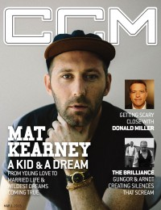

<!DOCTYPE PUBLIC "-//W3C//DTD XHTML 1.0 Transitional//EN" "http://www.w3.org/TR/1/DTD/1-transitional.dtd">
 xmlns="http://www.w3.org/1999/" xml:lang="en" lang="en">

<head>
<meta http-equiv="Content-Type" content="text; charset=utf-8" />
<title>Andy Argyrakis writing credits, page 25 :: CMnexus</title><link rel="stylesheet" href="../../../articles.css" type="text/css" title="CMnexus" /><meta name="viewport" content="width=device-width" /><meta name="title" content="Andy Argyrakis writing credits, page 25 :: CMnexus" /><meta name="color-scheme" content="light dark" /><meta name="description" content="Index of articles written by Andy Argyrakis, page 25, viewed as a timeline." /><meta name="theme-color" content="#669966" /><meta name="theme-color" content="#25282a" media="(prefers-color-scheme:dark)" /><meta name="keywords" content="Andy Argyrakis, CCM, Christian Single, YouthWorker, CCM Digital, writings" /><link rel="canonical" href="page25" /><link rel="image_src" href="../../../images/covers/CCMDL2015_3_Mat_K_pr20.jpg" /><link rel="help" href="../../../about/" /><link rel="home" href="../../../" /><link href="page24" rel="prev" /><link href="page26" rel="next" /><link href="../../Andy_Argyrakis" rel="up" /><link rel="apple-touch-icon" type="image/png" href="../../../apple-touch-icon.png" />
</head>
<body bgcolor="#000067" text="#000000" link="#000066" vlink="#000066" alink="#660000" itemscope itemtype="http://schema.org/WebPage">
<table bgcolor="#FFFFFF" width="100%" cellspacing="0" cellpadding="8" class="p100pc" id="maintable">
<tr valign="top" class="">
<td bgcolor="#669966" colspan="2" class="navcolor noprint p0tnytny navtop" style="padding-bottom:0px" itemscope itemtype="http://schema.org/SiteNavigationElement">
<div  id="pagehead" class="tnytnytnyonlyin">
<b><a href="../../../"
title="CMnexus" border="0" class="img" align="center">CMnexus</a></b>
<span class="smalltnytny tnytnytnyonlyoff">: <i>Contemporary Christian culture, music, and media.</i></span>
</div>
<ul class="navbar nodisc din" style="padding-top:.5em;">
<li class="pr2em din mainnav" ><a title="Browse magazines" href="../../../magazines/">Magazines</a></li>
<li class="pr2em din mainnav" ><a title="Browse artists &amp; authors" href="../../">Profiles</a></li>
<li class="din mainnav" ><a title="GMA Dove Award nominees and winner listings" href="../../../awards/Dove_Awards">Dove Awards</a></li>

</ul>

</td>
</tr>
<tr valign="top" class="vaT">
<td class="vaT" id="cocol" width="*">
<div class="vaT flL b600" itemprop="breadcrumb"><span class="printonly">cmnexus.org</span><a class="noprint tnytnyonlyoff" href="../../../" title="Front page of the CMnexus" itemprop="url"><span class="tdn">CM</span>nexus</a><span class="tnytnyonlyoff"> &rarr; </span><a href="../../" title="Root index of all artists: Choose letter" rel="up up up" itemprop="url"><span itemprop="name">Profiles</span></a> &rarr; <a href="../../writers/A" title="All artists whose names begin with 'A'" rel="up up" itemprop="url"><span itemprop="name">A</span></a> &rarr; <a href="../../Andy_Argyrakis" class="profile"  title="Profile of Andy Argyrakis" rel="up" itemprop="url"><span itemprop="name">Andy Argyrakis</span></a></div><h1 class="sectiontitle clB mb0">Andy Argyrakis</h1><div class="m600px m0px" itemscope itemtype="http://schema.org/Person"><table align="center" class="internalnav b600 noprint vaT clB"><caption>Writing Credits: 25 of 27</caption><tr><td><span class="flL"><a href="page24" rel="prev" title="Previous page of writing credits for Andy Argyrakis">&lt; -- Previous</a></span>&nbsp;&nbsp;&nbsp;&nbsp;&nbsp;&nbsp;&nbsp;&nbsp;<span class="flR"><a href="page26" rel="next" title="Next page of writing credits for Andy Argyrakis">Next -- &gt;</a></span></td></tr><tr><td class="msp"><a href="page18" title="Writing credits for Andy Argyrakis, page 18">18</a>&nbsp;<a href="page19" title="Writing credits for Andy Argyrakis, page 19">19</a>&nbsp;<a href="page20" title="Writing credits for Andy Argyrakis, page 20">20</a>&nbsp;<a href="page21" title="Writing credits for Andy Argyrakis, page 21">21</a>&nbsp;<a href="page22" title="Writing credits for Andy Argyrakis, page 22">22</a>&nbsp;<a href="page23" title="Writing credits for Andy Argyrakis, page 23">23</a>&nbsp;<a href="page24" title="Writing credits for Andy Argyrakis, page 24" rel="prev">24</a>&nbsp;<span class="currentlocation il b600">25</span>&nbsp;<a href="page26" title="Writing credits for Andy Argyrakis, page 26" rel="next">26</a>&nbsp;<a href="page27" title="Writing credits for Andy Argyrakis, page 27" rel=" last">27</a></td></tr></table><h2 class="mb1pr mt25pcempr">Writing credits listing</h2><ul style="margin:.5em 0px .5em -1em;" class="">
<li class="neg1emtnytny">15 Feb 2015 in <a href="../../../magazines/CCM_Digital/2015/page4" title="Contents of CCM Digital 15 Feb 2015"><span class="magazine">CCM Digital</span></a><ul class="neg1em"><li class=""><a href="../../Love_and_the_Outcome" class="profile"  title="Profile of Love and the Outcome">Love and the Outcome</a> - <span class="album" title="The album 'Ocean Way Sessions: Live EP' is by Love and the Outcome">Ocean Way Sessions: Live EP</span></li>
</li><li class=""><a href="../../The_Gray_Havens" class="profile"  title="Profile of The Gray Havens">The Gray Havens</a> - <span class="album" title="The album 'Fire and Stone' is by The Gray Havens">Fire and Stone</span></li>
<div class="flR clB" style="padding-bottom:2px;padding-top:2px;"><a href="../../../magazines/CCM_Digital/2015/page5" title="Contents of CCM Digital 1 Mar 2015"></a></div></li></ul><li class="neg1emtnytny">1 Mar 2015 in <a href="../../../magazines/CCM_Digital/2015/page5" title="Contents of CCM Digital 1 Mar 2015"><span class="magazine">CCM Digital</span></a><ul class="neg1em"><li class=""><a href="../../Mat_Kearney" class="profile"  title="Profile of Mat Kearney">Mat Kearney</a></li>
</li><li class="">"A Couple More Questions With Mat Kearney"<div style="margin-left:1.5em"><a href="../../Mat_Kearney" class="profile"  title="Profile of Mat Kearney">Mat Kearney</a></div></li>
</li><li class=""><a href="../../Yancy" class="profile"  title="Profile of Yancy">Yancy</a> - <span class="album" title="The album 'Little Praise Party: Taste & See' is by Yancy">Little Praise Party: Taste & See</span></li>
</li><li class=""><a href="../../George_Jones" class="profile"  title="Profile of George Jones">George Jones</a>, <a href="../../Tammy_Wynette" class="profile"  title="Profile of Tammy Wynette">Tammy Wynette</a> - <span class="album" title="The album 'Songs of Inspiration' is by George Jones, Tammy Wynette">Songs of Inspiration</span></li>
</li></ul><li class="neg1emtnytny">15 Mar 2015 in <a href="../../../magazines/CCM_Digital/2015/page6" title="Contents of CCM Digital 15 Mar 2015"><span class="magazine">CCM Digital</span></a><ul class="neg1em"><li class=""><a href="../../Britt_Nicole" class="profile"  title="Profile of Britt Nicole">Britt Nicole</a> - <span class="album" title="The album 'The Remixes' is by Britt Nicole">The Remixes</span></li>
</li><li class=""><a href="../../The_McCrary_Sisters" class="profile"  title="Profile of The McCrary Sisters">The McCrary Sisters</a> - <span class="album" title="The album 'Let's Go' is by The McCrary Sisters">Let's Go</span></li>
</li></ul><li class="neg1emtnytny">1 Apr 2015 in <a href="../../../magazines/CCM_Digital/2015/page7" title="Contents of CCM Digital 1 Apr 2015"><span class="magazine">CCM Digital</span></a><ul class="neg1em"><li class="">"Saluting gospel music's godfather Andraé Crouch In conversation with his twin sister, Sandra"<div style="margin-left:1.5em"><a href="../../Andra%c3%a9_Crouch" class="profile"  title="Profile of Andraé Crouch">Andraé Crouch</a>; <a href="../../Sandra_Crouch" class="profile"  title="Profile of Sandra Crouch">Sandra Crouch</a> interviewed</div></li>
</li><li class=""><a href="../../Jonathan_Thulin" class="profile"  title="Profile of Jonathan Thulin">Jonathan Thulin</a> - <span class="album" title="The album 'Science Fiction' is by Jonathan Thulin">Science Fiction</span></li>
</li><li class=""><a href="../../Matt_Maher" class="profile"  title="Profile of Matt Maher">Matt Maher</a> - <span class="album" title="The album 'Saints & Sinners' is by Matt Maher">Saints & Sinners</span></li>
</li></ul><li class="neg1emtnytny">15 Apr 2015 in <a href="../../../magazines/CCM_Digital/2015/page8" title="Contents of CCM Digital 15 Apr 2015"><span class="magazine">CCM Digital</span></a><ul class="neg1em"><li class=""><a href="../../Amy_Grant" class="profile"  title="Profile of Amy Grant">Amy Grant</a> - <span class="album" title="The album 'Be Still and Know... Hymns & Faith' is by Amy Grant">Be Still and Know... Hymns & Faith</span></li>
</li><li class=""><a href="../../David_Phelps" class="profile"  title="Profile of David Phelps">David Phelps</a> - <span class="album" title="The album 'Freedom' is by David Phelps">Freedom</span></li>
</li></ul><li class="neg1emtnytny">1 May 2015 in <a href="../../../magazines/CCM_Digital/2015/page9" title="Contents of CCM Digital 1 May 2015"><span class="magazine">CCM Digital</span></a><ul class="neg1em"><li class="">"Breaking Down The Barriers"<div style="margin-left:1.5em"><a href="../../Joanne_Cash" class="profile"  title="Profile of Joanne Cash">Joanne Cash</a></div></li>
</li><li class=""><a href="../../NeedToBreathe" class="profile"  title="Profile of NeedToBreathe">NeedToBreathe</a> - <span class="album" title="The album 'Live From the Woods' is by NeedToBreathe">Live From the Woods</span></li>
</li><li class=""><a href="../../KB" class="profile"  title="Profile of KB">KB</a> - <span class="album" title="The album 'Tomorrow We Live' is by KB">Tomorrow We Live</span></li>
</li></ul><li class="neg1emtnytny">15 May 2015 in <a href="../../../magazines/CCM_Digital/2015/page10" title="Contents of CCM Digital 15 May 2015"><span class="magazine">CCM Digital</span></a><ul class="neg1em"><li class=""><a href="../../Fireflight" class="profile"  title="Profile of Fireflight">Fireflight</a> - <span class="album" title="The album 'INNOVA' is by Fireflight">INNOVA</span></li>
</li><li class=""><a href="../../Blanca_Reyes" class="profile"  title="Profile of Blanca Reyes">Blanca Reyes</a> - <span class="album" title="The album 'Blanca' is by Blanca Reyes">Blanca</span></li>
</li></ul><li class="neg1emtnytny">1 Jun 2015 in <a href="../../../magazines/CCM_Digital/2015/page11" title="Contents of CCM Digital 1 Jun 2015"><span class="magazine">CCM Digital</span></a><ul class="neg1em"><li class=""><a href="../../Point_of_Grace" class="profile"  title="Profile of Point of Grace">Point of Grace</a> - <span class="album" title="The album 'Directions Home (Songs We Love, Songs You Know)' is by Point of Grace">Directions Home (Songs We Love, Songs You Know)</span></li>
</li><li class=""><a href="../../Jimmy_Needham" class="profile"  title="Profile of Jimmy Needham">Jimmy Needham</a> - <span class="album" title="The album 'Vice & Virtue' is by Jimmy Needham">Vice & Virtue</span></li>
</li></ul><li class="neg1emtnytny">15 Jun 2015 in <a href="../../../magazines/CCM_Digital/2015/page12" title="Contents of CCM Digital 15 Jun 2015"><span class="magazine">CCM Digital</span></a><ul class="neg1em"><li class=""><a href="../../Owl_City" class="profile"  title="Profile of Owl City">Owl City</a> - <span class="album" title="The album 'Mobile Orchestra' is by Owl City">Mobile Orchestra</span></li>
</li><li class=""><a href="../../Billy_Sprague" class="profile"  title="Profile of Billy Sprague">Billy Sprague</a> - <span class="album" title="The album 'Songs in the Key of Awe' is by Billy Sprague">Songs in the Key of Awe</span></li>
</li></ul><li class="neg1emtnytny">1 Jul 2015 in <a href="../../../magazines/CCM_Digital/2015/page13" title="Contents of CCM Digital 1 Jul 2015"><span class="magazine">CCM Digital</span></a><ul class="neg1em"><li class=""><a href="../../Anberlin" class="profile"  title="Profile of Anberlin">Anberlin</a> - <span class="album" title="The album 'Never Take Friendship Personal (Live From NYC)' is by Anberlin">Never Take Friendship Personal (Live From NYC)</span></li>
</li><li class=""><a href="../../Sada_K." class="profile"  title="Profile of Sada K.">Sada K.</a> - <span class="album" title="The album 'Long Story Short' is by Sada K.">Long Story Short</span></li>
</li><li class=""><a href="../../Mike_Lee" class="profile"  title="Profile of Mike Lee">Mike Lee</a> - <span class="album" title="The album 'All I Need' is by Mike Lee">All I Need</span></li>
</li></ul><li class="neg1emtnytny">15 Jul 2015 in <a href="../../../magazines/CCM_Digital/2015/page14" title="Contents of CCM Digital 15 Jul 2015"><span class="magazine">CCM Digital</span></a><ul class="neg1em"><li class=""><a href="../../Marvin_Sapp" class="profile"  title="Profile of Marvin Sapp">Marvin Sapp</a> - <span class="album" title="The album 'You Shall Live' is by Marvin Sapp">You Shall Live</span></li>
</li><li class=""><a href="../../Richard_Smallwood" class="profile"  title="Profile of Richard Smallwood">Richard Smallwood</a>, <a href="../../Vision_(Gospel)" class="profile"  title="Profile of Vision (Gospel)">Vision (Gospel)</a> - <span class="album" title="The album 'Anthology Live' is by Richard Smallwood, Vision (Gospel)">Anthology Live</span></li>
</li></ul><li class="neg1emtnytny">1 Aug 2015 in <a href="../../../magazines/CCM_Digital/2015/page15" title="Contents of CCM Digital 1 Aug 2015"><span class="magazine">CCM Digital</span></a><ul class="neg1em"><li class=""><a href="../../Toby_McKeehan" class="profile"  title="Profile of TobyMac">TobyMac</a> - <span class="album" title="The album 'This is Not a Test' is by TobyMac">This is Not a Test</span></li>
</li><li class=""><a href="../../Burlap_to_Cashmere" class="profile"  title="Profile of Burlap to Cashmere">Burlap to Cashmere</a> - <span class="album" title="The album 'Freedom Souls' is by Burlap to Cashmere">Freedom Souls</span></li>
</li><li class="">"U2 trades excess for introspection during tech-savvy journey on Innocence + Experience Tour"<div style="margin-left:1.5em"><a href="../../U2" class="profile"  title="Profile of U2">U2</a></div></li>
</li></ul><li class="neg1emtnytny">15 Aug 2015 in <a href="../../../magazines/CCM_Digital/2015/page16" title="Contents of CCM Digital 15 Aug 2015"><span class="magazine">CCM Digital</span></a><ul class="neg1em"><li class=""><a href="../../Natasha_Owens" class="profile"  title="Profile of Natasha Owens">Natasha Owens</a> - <span class="album" title="The album 'No One But You' is by Natasha Owens">No One But You</span></li>
</li><li class=""><a href="../../John_Waller" class="profile"  title="Profile of John Waller">John Waller</a> - <span class="album" title="The album 'Crazy Faith' is by John Waller">Crazy Faith</span></li>
</li></ul><li class="neg1emtnytny">1 Sep 2015 in <a href="../../../magazines/CCM_Digital/2015/page17" title="Contents of CCM Digital 1 Sep 2015"><span class="magazine">CCM Digital</span></a><ul class="neg1em"><li class=""><a href="../../Ray_Stevenson" class="profile"  title="Profile of Ray Stevenson">Ray Stevenson</a> - <span class="album" title="The album 'Fresh Start' is by Ray Stevenson">Fresh Start</span></li>
</li><li class=""><a href="../../Holly_Starr" class="profile"  title="Profile of Holly Starr">Holly Starr</a> - <span class="album" title="The album 'Everything I Need' is by Holly Starr">Everything I Need</span></li>
</li></ul><li class="neg1emtnytny">15 Sep 2015 in <a href="../../../magazines/CCM_Digital/2015/page18" title="Contents of CCM Digital 15 Sep 2015"><span class="magazine">CCM Digital</span></a><ul class="neg1em"><li class=""><a href="../../Crystal_Lewis" class="profile"  title="Profile of Crystal Lewis">Crystal Lewis</a> - <span class="album" title="The album 'Crystal Lewis' is by Crystal Lewis">Crystal Lewis</span></li>
</li><li class=""><a href="../../The_Annie_Moses_Band" class="profile"  title="Profile of The Annie Moses Band">The Annie Moses Band</a> - <span class="album" title="The album 'American Rhapsody' is by The Annie Moses Band">American Rhapsody</span></li>
</li></ul><li class="neg1emtnytny">1 Oct 2015 in <a href="../../../magazines/CCM_Digital/2015/page19" title="Contents of CCM Digital 1 Oct 2015"><span class="magazine">CCM Digital</span></a><ul class="neg1em"><li class=""><a href="../../Nichole_Nordeman" class="profile"  title="Profile of Nichole Nordeman">Nichole Nordeman</a> - <span class="album" title="The album 'The Unmaking' is by Nichole Nordeman">The Unmaking</span></li>
</li><li class=""><a href="../../Cindy_Morgan" class="profile"  title="Profile of Cindy Morgan">Cindy Morgan</a> - <span class="album" title="The album 'Bows & Arrows' is by Cindy Morgan">Bows & Arrows</span></li>
</li></ul><li class="neg1emtnytny">15 Oct 2015 in <a href="../../../magazines/CCM_Digital/2015/page20" title="Contents of CCM Digital 15 Oct 2015"><span class="magazine">CCM Digital</span></a><ul class="neg1em"><li class=""><a href="../../Stryper" class="profile"  title="Profile of Stryper">Stryper</a> - <span class="album" title="The album 'Fallen' is by Stryper">Fallen</span></li>
</li><li class=""><a href="../../Manafest" class="profile"  title="Profile of Manafest">Manafest</a> - <span class="album" title="The album 'Reborn' is by Manafest">Reborn</span></li>
</li><li class="">various artists - <span class="album" title="The album 'The Evolution of Gospel' is by various artists">The Evolution of Gospel</span></li>
</li></ul><li class="neg1emtnytny">1 Nov 2015 in <a href="../../../magazines/CCM_Digital/2015/page21" title="Contents of CCM Digital 1 Nov 2015"><span class="magazine">CCM Digital</span></a><ul class="neg1em"><li class="">"Round Two Knockout"<div style="margin-left:1.5em"><a href="../../Stryper" class="profile"  title="Profile of Stryper">Stryper</a></div></li>
</li><li class=""><a href="../../Jonathan_McReynolds" class="profile"  title="Profile of Jonathan McReynolds">Jonathan McReynolds</a> - <span class="album" title="The album 'Life Music: Stage Two' is by Jonathan McReynolds">Life Music: Stage Two</span></li>
</li><li class=""><a href="../../MercyMe" class="profile"  title="Profile of MercyMe">MercyMe</a> - <span class="album" title="The album 'MercyMe! It's Christmas' is by MercyMe">MercyMe! It's Christmas</span></li>
</li><li class="">various artists - <span class="album" title="The album 'WOW Hits 2016 Deluxe Edition' is by various artists">WOW Hits 2016 Deluxe Edition</span></li>
</li></ul><li class="neg1emtnytny">15 Nov 2015 in <a href="../../../magazines/CCM_Digital/2015/page22" title="Contents of CCM Digital 15 Nov 2015"><span class="magazine">CCM Digital</span></a><ul class="neg1em"><li class=""><a href="../../Laura_Story" class="profile"  title="Profile of Laura Story">Laura Story</a> - <span class="album" title="The album 'God With Us' is by Laura Story">God With Us</span></li>
</li><li class=""><a href="../../The_Gaither_Vocal_Band" class="profile"  title="Profile of The Gaither Vocal Band">The Gaither Vocal Band</a> - <span class="album" title="The album 'Christmas Collection' is by The Gaither Vocal Band">Christmas Collection</span></li>
</li><li class=""><a href="../../Jordan_Feliz" class="profile"  title="Profile of Jordan Feliz">Jordan Feliz</a> - <span class="album" title="The album 'Beloved' is by Jordan Feliz">Beloved</span></li>
</li></ul><li class="neg1emtnytny">1 Dec 2015 in <a href="../../../magazines/CCM_Digital/2015/page23" title="Contents of CCM Digital 1 Dec 2015"><span class="magazine">CCM Digital</span></a><ul class="neg1em"><li class=""><a href="../../Sara_Groves" class="profile"  title="Profile of Sara Groves">Sara Groves</a> - <span class="album" title="The album 'Floodplain' is by Sara Groves">Floodplain</span></li>
</li><li class=""><a href="../../Seventh_Day_Slumber" class="profile"  title="Profile of Seventh Day Slumber">Seventh Day Slumber</a> - <span class="album" title="The album 'Redline' is by Seventh Day Slumber">Redline</span></li>
</ul></div><table align="center" class="internalnav b600 noprint vaT clB"><caption>Writing Credits: 25 of 27</caption><tr><td><span class="flL"><a href="page24" rel="prev" title="Previous page of writing credits for Andy Argyrakis">&lt; -- Previous</a></span>&nbsp;&nbsp;&nbsp;&nbsp;&nbsp;&nbsp;&nbsp;&nbsp;<span class="flR"><a href="page26" rel="next" title="Next page of writing credits for Andy Argyrakis">Next -- &gt;</a></span></td></tr><tr><td class="msp"><a href="page18" title="Writing credits for Andy Argyrakis, page 18">18</a>&nbsp;<a href="page19" title="Writing credits for Andy Argyrakis, page 19">19</a>&nbsp;<a href="page20" title="Writing credits for Andy Argyrakis, page 20">20</a>&nbsp;<a href="page21" title="Writing credits for Andy Argyrakis, page 21">21</a>&nbsp;<a href="page22" title="Writing credits for Andy Argyrakis, page 22">22</a>&nbsp;<a href="page23" title="Writing credits for Andy Argyrakis, page 23">23</a>&nbsp;<a href="page24" title="Writing credits for Andy Argyrakis, page 24" rel="prev">24</a>&nbsp;<span class="currentlocation il b600">25</span>&nbsp;<a href="page26" title="Writing credits for Andy Argyrakis, page 26" rel="next">26</a>&nbsp;<a href="page27" title="Writing credits for Andy Argyrakis, page 27" rel=" last">27</a></td></tr></table></td><td class="noprint lineC" style="min-width:150px;" width="150px" itemscope itemtype="http://schema.org/WPSideBar" id="rsidebar"><div><b>CMnexus</b> <i>(noun)</i><br />The magazine index<br />of modern music<br />and Christianity<br /></div></td></tr><tr class="smalltnytny" itemscope itemtype="http://schema.org/WPFooter"><td id="footer" class="navcolor pbnw" colspan="2"><div class="lineC">&copy; 2011 CMnexus. Last updated May 2025.<span class="printonly"> Contact: </span> <span class="noprint"> Rants and other correspondence to: </span> <!--BL-->editor -AT- cmnexus<span class="noshow"><!--BL--></span> -D&Oslash;T- org <a title="About the Nexus, general information" href="../../../about/" class="noprint">About</a></div></td></tr></table></body><>